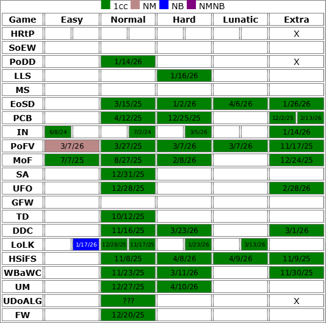

Touhou Progress:
5/27/26: UFO... UFO Lunatic Hard mode was BY FAR the hardest hard mode. After 45+ attempts of trial and error, I finally achieved a H1CC! Although it was rough, UFO was pretty fun for me
(for now). I guess I used up all my luck getting my UFO N1CC with a single attempt of SanaeB, because luck was NOT on my side until my final run.
My current Touhou completion chart:

Other Blogpostings
1/1/26: WOW, managed to complete all Windows mainline N1CCs for my Touhou chart before 2026. SA was by far the most hardest N1CC out of the bunch. Took around 6+ hours just to beat it on normal. On the other hand, for UFO, which I thought would be more harder, I somehow managed to just sickgrab with a single credit with SanaeB...
Other Touhou Stuff
I got into Touhou's community in around 2020 because of its music and amount of fan-content (Bad Apple).
I never played the real Touhou games until 4 years later, June 6th, 2024, and oh damn it got hands.